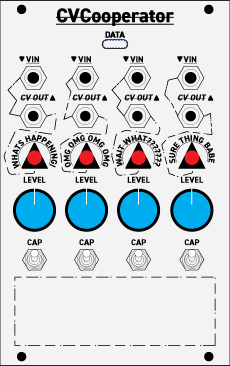
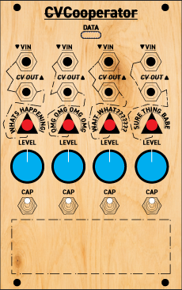

Cooperative CV behavior translator
Product description: CVCooperator is a cooperative voltage instrument for Eurorack that transforms rigid control signals into expressive, time-shaped motion. Rather than generating modulation, it negotiates between incoming voltage, human gesture, and temporal behavior using passive analog circuits and light-controlled resistance. The result is a living control surface where logic becomes movement.
Metal / White Panel Mockup
Birch Plywood Panel Mockup
The birch plywood version transforms CVCooperator from a utility module into a personal instrument. Birch adds warmth, tactile presence, and visible individuality: every panel carries its own grain, making each build unique. CNC engraving allows the signal flow, typography, and behavior language to be physically carved into the surface, aligning the material process with the module’s cooperative philosophy.
Passive / Gate-driven Eurorack utility module
16 HP · 8 Inputs · 8 Outputs · No rack power required
This module converts rigid gates and CVs into organic, slow, rubbery control voltages using purely analog means: resistors, LDRs (vactrol-style), capacitors, and human-controlled attenuation.
Digital logic is fast and sharp. Music often is not. This module lives between those two worlds.
This cell is replicated 8 times.
The capacitor integrates voltage changes over time. Instead of jumping instantly, the output moves gradually.
Combined with an LDR, the result is non-linear and musical. The rise and fall times are different — like acoustic motion.
An LED shining on an LDR forms a voltage-controlled resistor.
An ESP32 or Arduino can drive LEDs only. It never touches Eurorack voltage directly.
This is not a precision tool. It is a translator between logic and gesture.
Build one channel. Patch it. Listen. Then replicate.